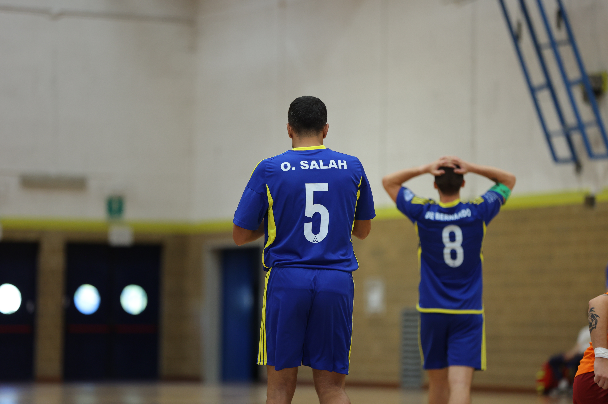

Sconfitta nel derby friulano. Primo tempo negativo, nella ripresa i seggiolai imbastiscono la rimonta e mettono alle corde Cividale, che strappa un 5-3 di grande sofferenza
Derby dai due volti contro le Eagles. Primo tempo poco spettacolare. Le due squadre girano a ritmi bassi e creano poco. Eagles in vantaggio grazie a Stendler e Calderone, poi 2 errori manzanesi portano ad altrettanti centri delle aquile. Sul 3-0 sono Dorigo e Salah a riaccendere la luce, mandando i seggiolai a riposo sul 3-1. Ripresa di tutt’altro livello. Il Manzano cresce e mette in difficoltà le Eagles, che spendono subito 5 falli. Salah fa 2-3, risposta immediata di Stendler per il 4-2, ma De Giorgio accorcia su rigore. Sul 4-3 il fortino cividalese sembra sul punto di cedere, Patti deve parare anche un libero, ma nel finale la squadra di Asquini trova ossigeno col rigore di Langella.
PRIMO TEMPO – Avvio poco spettacolare: Manzano ed Eagles manovrano con lentezza e non riescono a sfruttare gli spazi, anche le occasioni concrete latitano. Il primo lampo arriva al 4’ e nasce dai piedi di Turolo che, ben smarcato da Raul, si gira sul portiere tentando lo scavetto: palla fuori di poco.
Al 6’ grande occasione di Calderone che sfrutta un’ingenuità difensiva per rubare palla in area. L’ex Lignano prova a saltare Pozzatello ma sbatte sull’opposizione di Dorigo che salva a porta vuota. Il miracolo viene vanificato nel corner seguente: Stendler riceve da fuori e calcia in mezzo, trovando la deviazione di Calderone per l’1-0.
Manzano che incassa subito il raddoppio. Stendler recupera palla nella sua metà campo su una rimessa a sfavore e lancia lungo Turolo. Il capitano delle Eagles sfrutta una copertura troppo morbida e supera Pozzatello: 2-0.
Seggiolai in bambola: Costantini si invola verso la porta, ma Pozzatello ci mette una pezza. Più cinico Langella che a 5’ dall’intervallo sfrutta una palla persa letale per fare 3-0.
Nel momento più buio i padroni di casa trovano uno spunto dal quale ricostruire. Dorigo riceve bene in mezzo e imbuca Salah che accorcia le distanze: 3-1. Cividale prova a colpire con Barile, che sbatte su Pozzatello. Ultima chance con una dinamica simile a quella dell’1-3: Dorigo cerca Salah che, questa volta più decentrato, non inquadra lo specchio.
SECONDO TEMPO – Manzano che scende in campo molto più in palla rispetto alla prima frazione. Dorigo ci prova su punizione due volte, sulla seconda conclusione è decisivo il salvataggio sulla linea di Guandeline. Eagles che si affidano a Turolo, travolgente in ripartenza, palla scaricata sul lato per Guandeline che gliela ridà in mezzo, ma coi tempi sbagliati.
La terna arbitrale lascia correre poco e dopo 5’ le Eagles si sono già caricate di 5 falli. Calderone piomba su una palla incerta in una zona pericolosa, salvifico Pozzatello in uscita.
La partita è equilibrata: al 6’ Salah riparte e scambia sul lato con Leonardo De Giorgio, palla di nuovo in mezzo per Salah che concretizza il 2-3.
Il Manzano sogna il pari, ma le Eagles hanno più qualità e non perdonano sulle concessioni. Stendler riparte e sfonda la porta con una botta centrale sotto la traversa: 4-2. Sull’altro fronte meno efficace De Giorgio che guida il contropiede in superiorità numerica, ma invece di servire i compagni cerca la porta, senza inquadrare lo specchio.
La partita è aperta: al 7’ fallo di mano nell’area delle Eagles. Dal dischetto va De Giorgio che è impeccabile: 3-4.
Padroni di casa che alzano il ritmo e cercano il pari. Barile fa un gran recupero su Fusco lanciato in area, poi gli ospiti commettono il 6° fallo. Dai 10 metri va sempre De Giorgio, ma questa volta il duello lo vince Patti che salva i suoi parando il libero.
Proprio il portiere, uno degli ex della gara, si fa male a metà della seconda frazione. Il gioco si ferma per alcuni minuti, e Patti (al quale va un augurio di un pronto ritorno in campo) lascia il posto a Facchin. Il dodicesimo delle Eagles viene subito sollecitato dalla girata di Dorigo e dalla conclusione di De Bernardo. Cividale che risponde con Turolo, per lui una traversa dalla distanza. Pericoloso anche Calderone, chiuso dall’uscita di Pozzatello.
Il Manzano spinge, Facchin interviene con sicurezza più volte. I padroni di casa sfiorano il pari quando Salah viene pescato in area, ma Calderone recupera provvidenzialmente e gli nega la tripletta.
Nel momento di maggiore sofferenza le Eagles si vedono assegnare un rigore. Dal dischetto va Langella che è impeccabile: 5-3.
Negli ultimi minuti la squadra di Sironi e Movio si gioca il tutto per tutto: occasioni con Polidori, Fusco e Salah. Ultimo acuto del Cividale con Barile. Si chiude sul 5-3.
I gol regalati nel primo tempo pesano sul bilancio della gara. Per il resto si è visto un Manzano che ha messo in grande difficoltà un avversario molto più attrezzato. In queste prime 5 giornate i seggiolai hanno raccolto 1 vittoria, 1 pareggio e 3 sconfitte, ma se la sono sempre giocata a viso aperto. Il prossimo impegno è sempre complicato. Si va in trasferta in casa del Conegliano, capolista a pari punti con Elmas e Bubi Merano. Il Girone B però si è dimostrato equilibrato e ci sono già stati risultati inaspettati.